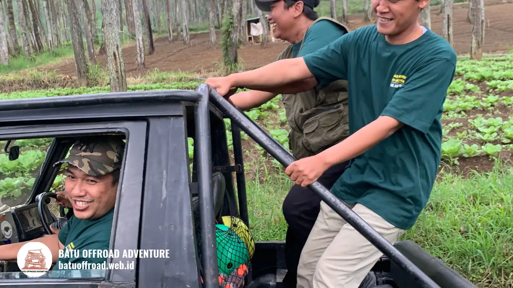

Checklist Panitia Gathering Kantor Outdoor di Batu
Checklist panitia gathering kantor outdoor di Batu mencakup persiapan sebelum acara, tugas pada hari H, dan evaluasi setelahnya agar acara berjalan lancar dan aman.
- Checklist membantu panitia menjaga acara outdoor yang melibatkan banyak pihak, jadwal ketat, dan faktor cuaca.
- Persiapan sebaiknya dimulai jauh hari karena Kota Batu padat pada musim libur panjang.
- Tugas hari H berfokus pada kehadiran, briefing keselamatan, jadwal, konsumsi, dan dokumentasi.
- Evaluasi setelah acara mencakup survei peserta, anggaran, dan rekomendasi perbaikan.
Mengapa panitia gathering memerlukan checklist?
Panitia gathering memerlukan checklist karena acara outdoor melibatkan banyak pihak, jadwal ketat, dan faktor cuaca, sehingga satu tugas terlewat dapat memengaruhi kenyamanan seluruh peserta.
Berbeda dengan acara di ruangan, gathering outdoor bergantung pada kendaraan, jalur, penyedia jasa, konsumsi, dan kondisi alam. Checklist memastikan setiap hal tersebut memiliki penanggung jawab dan tenggat.
Dengan daftar yang jelas, panitia juga lebih mudah mendelegasikan tugas, memantau kemajuan, dan mengambil keputusan cepat ketika ada perubahan di lapangan.
Kapan panitia mulai menyiapkan gathering di Batu?
Panitia sebaiknya mulai menyiapkan gathering sejak jauh hari karena Kota Batu padat saat libur panjang, dengan 778.235 kunjungan sementara tercatat pada libur Lebaran 2025.
Dinas Pariwisata Kota Batu, melalui ANTARA pada April 2025, mencatat 778.235 kunjungan wisatawan selama libur Lebaran 2025, dibandingkan 564.622 kunjungan pada periode serupa 2024. Angka 2025 tersebut belum final saat dirilis.
Lonjakan kunjungan seperti ini dapat memengaruhi ketersediaan penyedia jasa, penginapan, dan tempat makan. Panitia yang menjadwalkan acara pada musim libur sebaiknya mengonfirmasi kebutuhan lebih awal, atau mempertimbangkan hari kerja yang cenderung lebih longgar.
Apa checklist panitia sebelum hari acara?
Checklist sebelum acara mencakup penetapan tujuan dan anggaran, pendataan peserta, pemilihan penyedia jasa, konfirmasi jadwal, pembagian tugas, dan komunikasi informasi acara kepada peserta.
- Tetapkan tujuan acara dan anggaran yang disetujui pimpinan.
- Data jumlah peserta, termasuk kebutuhan khusus seperti pantangan makanan.
- Bandingkan penawaran penyedia jasa dan minta rincian isi paket tertulis.
- Konfirmasi tanggal, waktu, titik kumpul, dan kebijakan jadwal ulang bila hujan.
- Susun rundown dan bagikan tugas ke tim panitia.
- Kirim informasi acara ke peserta: jadwal, pakaian, dan perlengkapan yang dibawa.
- Siapkan konsumsi, dokumentasi, dan kebutuhan acara tambahan.
Apa checklist panitia pada hari H?
Checklist hari H mencakup pengecekan kehadiran, briefing keselamatan, pembagian kelompok, pemantauan jadwal, dokumentasi, konsumsi, dan kesiapan menghadapi cuaca atau kendala tak terduga.
- Tiba lebih awal dan pastikan titik kumpul siap.
- Lakukan registrasi dan cek kehadiran peserta.
- Pastikan briefing keselamatan dilakukan sebelum kegiatan dimulai.
- Bagi peserta ke dalam kelompok sesuai rencana.
- Pantau jadwal dan komunikasikan perubahan kepada seluruh panitia.
- Pastikan konsumsi dan air minum tersedia.
- Tunjuk satu orang sebagai penanggung jawab lapangan dan satu orang untuk dokumentasi.

Pengemudi dan penumpang tersenyum di jip offroad hitam, menunjukkan kesiapan dan kekompakan tim saat gathering outdoor di Batu.
Apa yang perlu dibawa peserta dan panitia?
Peserta gathering outdoor umumnya perlu membawa pakaian dan alas kaki nyaman, pelindung debu dan matahari, air minum, obat pribadi, serta ponsel dengan penyimpanan cukup.
Untuk peserta, informasi ini sebaiknya dikirim sebelum acara dalam bentuk pesan singkat. Panitia sendiri perlu membawa daftar peserta, kontak penyedia jasa, perlengkapan registrasi, kantong sampah, dan alat tulis.
Anjurkan peserta membawa pakaian ganti bila memungkinkan, terutama bila kegiatan berpotensi kotor oleh debu atau lumpur. Peserta dengan kebutuhan obat tertentu sebaiknya membawanya sendiri dan memberi tahu panitia bila diperlukan.
Bagaimana checklist keselamatan dan keadaan darurat?
Checklist keselamatan gathering outdoor mencakup pemeriksaan kendaraan, sabuk pengaman atau pegangan, kotak P3K, kontak darurat, dan prosedur bila peserta tidak enak badan atau cuaca memburuk.
- Tanyakan kondisi dan perawatan kendaraan kepada penyedia jasa sebelum hari acara.
- Pastikan pengemudi atau pemandu berpengalaman dan memahami rute.
- Siapkan kotak P3K dan daftar kontak darurat yang mudah diakses.
- Tentukan siapa yang mengambil keputusan bila acara harus dihentikan atau dijadwalkan ulang.
- Beri kesempatan peserta menyampaikan bila merasa tidak nyaman, tanpa tekanan sosial.
Daftar ini bersifat umum. Untuk kondisi tertentu, seperti peserta dengan masalah kesehatan, panitia sebaiknya mengikuti arahan tenaga medis atau penyedia jasa.
Apa checklist evaluasi setelah acara?
Checklist evaluasi setelah acara mencakup survei peserta, pengumpulan dokumentasi, pencocokan anggaran, catatan kendala, dan rekomendasi perbaikan untuk gathering kantor berikutnya.
- Kirim survei singkat kepada peserta dalam beberapa hari setelah acara.
- Kumpulkan dan bagikan dokumentasi ke kanal internal perusahaan.
- Cocokkan realisasi anggaran dengan rencana.
- Catat kendala di lapangan dan penyebabnya.
- Tulis rekomendasi untuk acara berikutnya dan simpan sebagai arsip panitia.
Evaluasi juga dapat dikaitkan dengan tujuan awal acara. Misalnya, bila tujuan adalah memperkuat komunikasi antar-divisi, tanyakan kepada peserta apakah mereka merasa lebih mengenal rekan dari divisi lain.
Kesimpulan
Checklist panitia gathering yang disiplin membuat acara outdoor di Batu lebih tertib, aman, dan nyaman karena setiap tugas memiliki penanggung jawab, waktu, dan rencana cadangan.
Ingin merencanakan gathering kantor offroad yang seru dan berkesan? Hubungi Batu Offroad Adventure di 0812-3398-9707 untuk konsultasi rute dan paket terbaik.
FAQ
-
Mengapa panitia gathering memerlukan checklist?
Panitia gathering memerlukan checklist karena acara outdoor melibatkan banyak pihak, jadwal ketat, dan faktor cuaca, sehingga satu tugas terlewat dapat memengaruhi kenyamanan seluruh peserta. -
Kapan panitia mulai menyiapkan gathering di Batu?
Panitia sebaiknya mulai menyiapkan gathering sejak jauh hari karena Kota Batu padat saat libur panjang, dengan 778.235 kunjungan sementara tercatat pada libur Lebaran 2025. -
Apa checklist panitia sebelum hari acara?
Checklist sebelum acara mencakup penetapan tujuan dan anggaran, pendataan peserta, pemilihan penyedia jasa, konfirmasi jadwal, pembagian tugas, dan komunikasi informasi acara kepada peserta. -
Apa checklist evaluasi setelah acara?
Checklist evaluasi setelah acara mencakup survei peserta, pengumpulan dokumentasi, pencocokan anggaran, catatan kendala, dan rekomendasi perbaikan untuk gathering kantor berikutnya.
Artikel Terkait